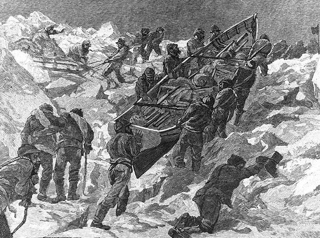

Более 50 океанографических исследователей находятся на борту российского флагмана полярных исследований "Академик Трешников", который направляется к морю Лаптевых и Восточно-Сибирскому морю.
"Лед стал не только тоньше, но и менее прочным. Гораздо проще порвать с кораблем", - говорит Роб Рембер. Он является доцентом Университета Аляски Фэрбенкс и ключевым координатором экспедиции Nansen and Amundsen Basins Observational Systems (NABOS), которая в настоящее время плавает в российских восточных арктических водах.
На борту "Академика Трешникова" находятся исследователи из нескольких стран. Большинство из них-из России, США и Германии, но также представлены Корея и Норвегия. Их маршрут пролегает от норвежского города Киркенеса до Архангельска и оттуда далее на восток до Восточно-Сибирского моря.
Это 52-дневное путешествие в одни из самых отдаленных и негостеприимных вод на земле.

Осваивавшие Колыму и Индигирку казаки в первой половине XVII века спускались по течению, выходили в море и шли к Таймыру, где волоком добирались до Енисея, на берегах которого охотились. Тому подтверждение - указ 1638 года якутскому воеводе: «Беречь накрепко, чтоб торговые и промышленные люди с Колымы, Индигирки, Лены реки в Пясину и на Нижнюю Тунгуску никто не перешел».
Первое исследовательское плавание в историческую эпоху совершил якутский казак Михайло Стадухин4 в 1644. Его отряд построил на Индигирке судно (коч), спустился до устья и морем достиг Колымы, где Стадухин основал Нижнеколымский острог. В 1645 Стадухин морем вернулся на Лену, откуда начал свой поход.
Помощник Стадухина Семён Дежнёв 5 в июне 1648 на 7 кочах 6 прошёл всю восточную часть моря от устья Колымы и далее через пролив Лонга и Берингов пролив до Анадырского залива, где основал город Анадырь. Таким образом, в 1648 году была показана возможность сквозной навигации вдоль всего берега Восточно-Сибирского моря.
Материковые берега моря описаны в первой половине XVIII века Великой Северной экспедицией. Новосибирские острова (кроме островов Де-Лонга) были открыты к 1811: Большой и Малый Ляховские острова в 1712 Меркурием Вагиным и Яковом Пермяковым, острова Анжу позже - о. Котельный в 1773 Иваном Ляховым, его полуостров Фаддеевский в 1805 Яковом Санниковым, о. Новая Сибирь в 1806 промысловиками купцов Сыроватских, Земля Бунге в 1811 Санниковым. Побережье от устья Колымы до мыса Шелагский описал в 1820 Фердинанд Врангель,7 он же в 1821 нанёс на карту Медвежьи острова. Чануская губа была описана в 1822 помощником Врангеля Фёдором Матюшкиным8, побережье от мыса Шелагский до Чукотского моря - Врангелем в 1823. Все эти открытия были совершены не на кораблях, а на нартах. В 1823 от чукчей Врангель услышал рассказ о большом острове на севере (ещё не открытый о. Врангеля), куда штормы иногда уносили рыбачьи лодки.
Остров Врангеля был обнаружен в 1849 британским фрегате "Геральд" (капитан Генри Келлетт), подходившим к нему со стороны Чукотского моря. Западное побережье острова открыл в 1867 американский китобой Томас Лонг, пройдя на шхуне "Нил" между материком и островом проливом, который теперь называется пролив Лонга.
В сентябре 1875 Восточно-Сибирское море пересёк на парусно-паровом судне "Вега" барон Адольф Эрик Норденшельд 9- первый мореплаватель, которому удалось пройти Северным морским путём вдоль всего берега Азии.
Последними были открыты острова Де-Лонга. В 1879 американская шхуна "Жаннетта" под командованием Джорджа Вашингтона Де-Лонга 10намеревавшегося достичь Северного полюса, вмёрзла в лёд на северо-востоке Чукотского моря и дрейфовала вместе с паковым льдом на запад. Пройдя по северной границе Восточно-Сибирского моря за полтора года, шхуна достигла 16 мая 1881 острова, названного остров Жаннетты, а 24 мая острова, получившего название остров Генриетты. 13 июня "Жаннетта" была раздавлена льдами, и члены экспедиции Де-Лонга продолжали путь по льдам, волоча за собой по торосам корабельные шлюпки. 28 июля они открыли остров Беннетта и обследовали его, несмотря на нехватку продовольствия. К 13 сентября 1881 экспедиция пересекла Новосибирские острова и вышла к кромке льдов моря Лаптевых, спустила на воду шлюпки и отправилась в плавание, закончившееся гибелью большинства людей.
В 1913 ледокольные пароходы "Таймыр" и "Вайгач", возвращаясь после исследования открытого ими архипелага Северная Земля, обходили острова Анжу с севера, зашли на остров Беннетта и обнаружили ещё один остров, названный в честь помощника начальника экспедиции Вилькицкого.11 Последнее открытие было совершено следующей экспедицией "Таймыра" и "Вайгача" 27 августа 1914, когда вахтенный "Вайгача" лейтенант Жохов 12 заметил остров с координатами 76°10' с.ш. 153° в.д., получивший название остров Жохова.